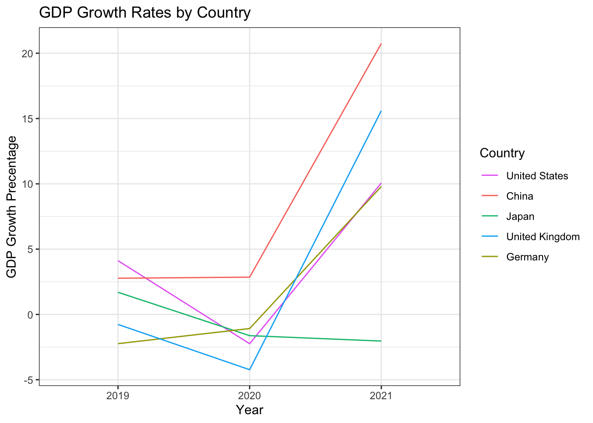

Chapter 5 1
## # A tibble: 5 × 6
## Country `Country Code` `2018` `2019` `2020` `2021`
## <chr> <chr> <dbl> <dbl> <dbl> <dbl>
## 1 United States USA 20.5 21.4 20.9 23.0
## 2 China CHN 13.9 14.3 14.7 17.7
## 3 Japan JPN 5.04 5.12 5.04 4.94
## 4 Germany DEU 3.98 3.89 3.85 4.22
## 5 United Kingdom GBR 2.90 2.88 2.76 3.19## # A tibble: 5 × 5
## Country `Country Code` `2019` `2020` `2021`
## <chr> <chr> <dbl> <dbl> <dbl>
## 1 United States USA 4.12 -2.24 10.1
## 2 China CHN 2.77 2.86 20.7
## 3 Japan JPN 1.70 -1.62 -2.04
## 4 Germany DEU -2.24 -1.08 9.79
## 5 United Kingdom GBR -0.762 -4.23 15.6
The graph shows the GDP growth rates for the top five countries with the highest GDP. The GDP of these countries accounts for more than half of the world GDP. They well indicate the global economy. We can observe from the graph that most of the countries, expect China, experienced negative GDP growth in 2020. Most of the countries, expect China and Germany, experienced the lowest GDP growth in 2020. The global economy was not going well during the pandemic.